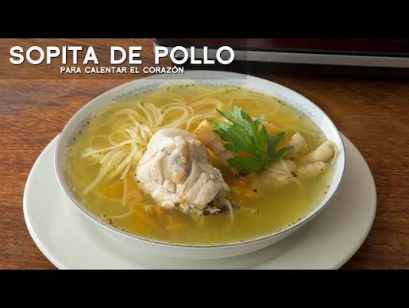

Tutorial de Sopa de Pollo

Ingredientes básicos
- Pollo: 500 gramos de pechuga en cubos o presas limpias sin piel.
- Vegetales: 1 zanahoria en cubos, 1 rama de apio picada y 1 cebolla picada.
- Aromáticos: 2 dientes de ajo machacados y un poco de cilantro fresco.
- Base: 1.5 litros de agua o caldo de pollo suave.
- Carbohidratos: 2 papas medianas en trozos y 100 gramos de fideos cortos o arroz.
- Sazón: Sal, pimienta y una pizca de comino al gusto.
Pasos para la prepara
- Hervir el pollo
- Espumar el caldo
- Cocinar los vegetales
- Agregar los fideos
- Sazonar y servir